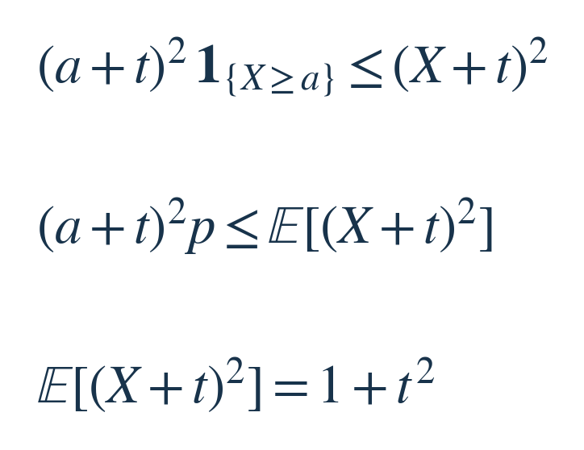
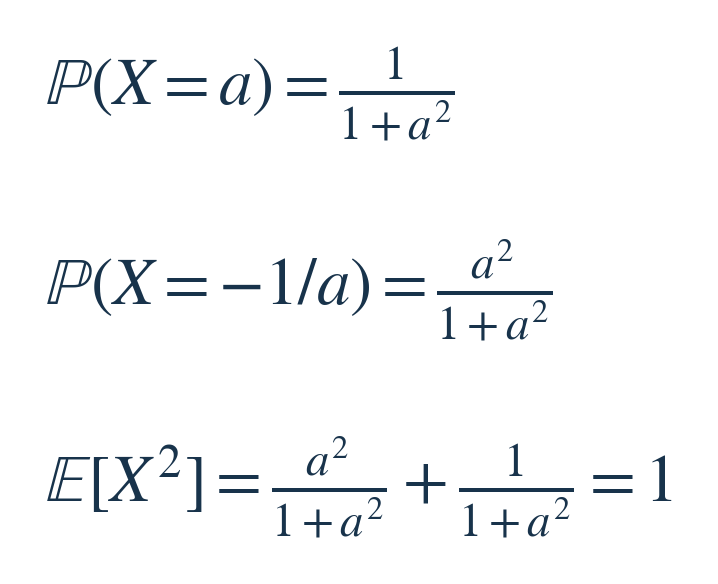
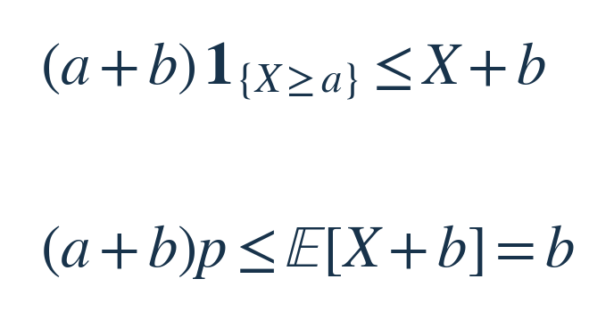
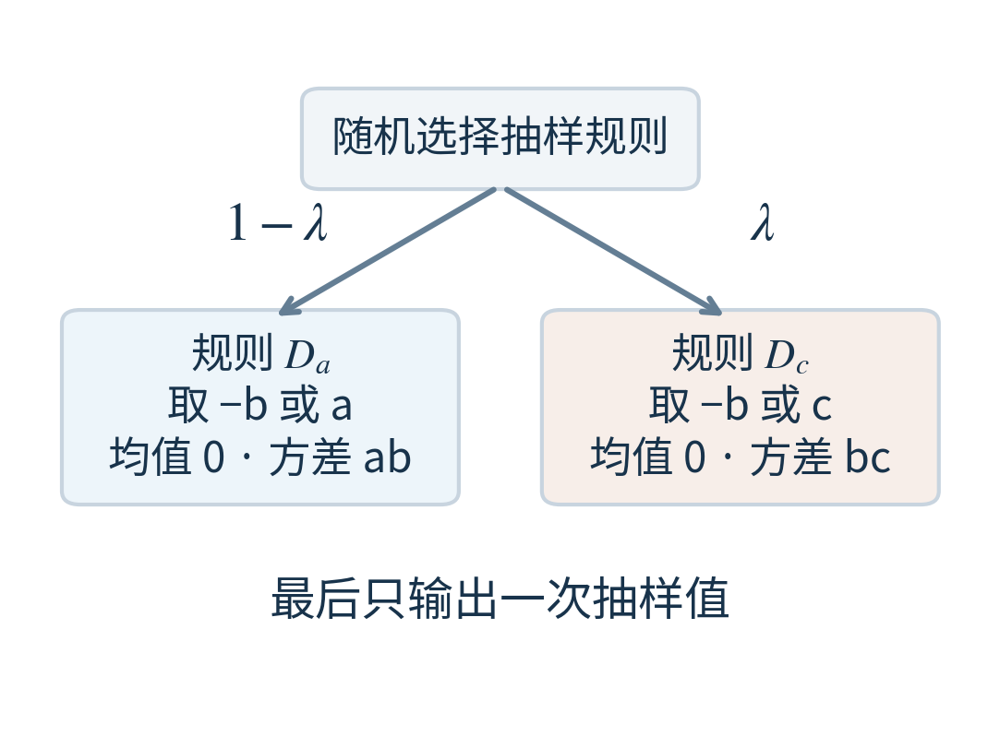
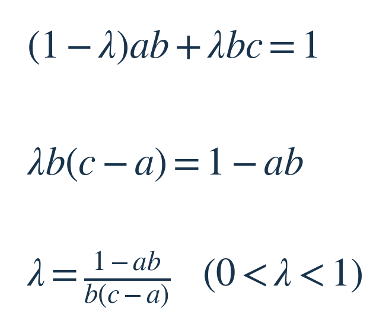
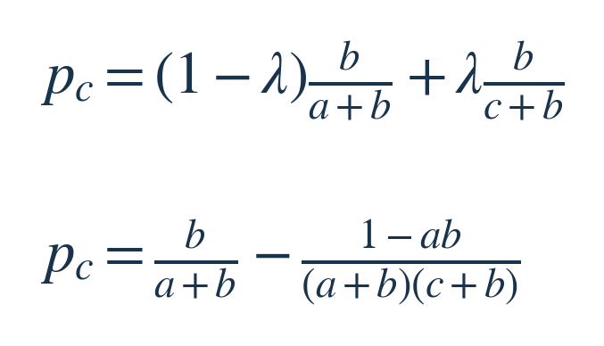

类别：概率统计 · 量化面试风格原创改编。建议思考20–40分钟，完整解析约8–10分钟。
一个随机量的平均值和波动大小已知，但分布形状未知。你能给出对所有可能分布都成立的尾概率界吗？本期需要同时给出证明和构造。
主问题
设 X 是实值随机变量，E[X]=0、Var(X)=1。给定常数 a>0，求 P(X≥a) 的最紧上界，并构造达到这个上界的分布。
分布可以自由选择，允许只在有限个点取值；不预设正态、对称或连续。方差必须恰好为1，等于阈值 a 的结果计入事件。这里没有重复抽样或独立性要求。
增量追问
在全部原条件之外，再给定 b>0，要求 X≥−b 以概率1成立。求 P(X≥a) 的最紧上界随 a、b 怎样变化，并判断它是否能被某个分布达到；如果只能任意逼近，请给出一族构造。
可以先独立思考，再往下看。以下提示和解答会揭示方法。
三级提示：按需要逐级阅读
提示一级：先想怎样使用已知信息
均值与方差决定了 E[X] 和 E[X²]。尝试找一个非负表达式：它在 X≥a 时有明确下限，而且期望能由这两项计算。
提示二级：留一个可调整的平移量
考察 (X+t)²，其中 t≥0。先对每次抽样比较它与事件指示量，再取期望，最后选择 t。证明上界之后，回看每一步何时取等。
提示三级：追问需要同时处理可达性
新条件让 X+b 非负，可以直接控制它的期望。若取等分布的方差不足1，尝试把两个均值同为0、但方差一低一高的抽样规则随机混合。改变高方差规则的正端点，观察尾概率。
完整解答，想好再看
主问题：先控制事件，再让上界取等
把目标概率记为 p=P(X≥a)。均值和方差只给了两个整体信息：E[X]=0、E[X²]=1。我们要把“达到或超过阈值”这个事件，转成能用这两个信息计算的量。
选一个非负数 t，把所有取值先平移，再平方。只要 X≥a，就有 X+t≥a+t>0，因此 (X+t)² 至少是 (a+t)²；事件外的平方仍非负。用 1{X≥a} 表示事件发生时为1、否则为0的指示量，就得到第一行。


第二行是对逐次抽样都成立的不等式取期望。第三行来自展开平方：E[X²]+2tE[X]+t²=1+t²。于是每个 t≥0 都给出一个上界 p≤(1+t²)/(a+t)²。
怎样选 t？把右侧记为 f(t)，它的导数是 2(at−1)/(a+t)³。分母为正，所以在 t<1/a 时下降、t>1/a 时上升；最小点是 t=1/a。代入便得到 p≤1/(1+a²)。接下来还要证明，这个数确实能达到。[1]
构造达到上界的分布
回看平方不等式的取等条件。尾部如果全放在 a，第一行在尾部恰好取等；其余概率如果全放在 −t，右侧平方就是0。取 t=1/a 后，只需在 a 和 −1/a 两点之间分配概率。
设取 a 的概率为 q，均值为0要求 qa−(1−q)/a=0。两边乘 a，得到 q(a²+1)=1，因此 q=1/(1+a²)。下面同时核对二阶矩。


两项概率相加为1，均值为0，方差也正好为1。因为题目包含等号，落在 a 的全部概率都算入尾部。我们既证明所有分布都不超过这个数，又构造了达到它的分布，所以它就是最大值。
追问：下限如何改变可行分布
现在已知 X≥−b，其中 b>0。上面的两点分布仍然可用吗？它的负取值是 −1/a，所以只有 b≥1/a，也就是 ab≥1 时，才满足新条件。这个分界先从构造本身出现。
要处理 ab<1 的情况，利用新增信息：X+b 永远非负，且均值为 b。每次出现 X≥a，X+b 至少贡献 a+b；其余结果至少贡献0。于是得到第二条上界，这正是对平移后的非负变量应用 Markov 不等式。[2]


两条上界必须同时满足，取较小者即可。比较 b/(a+b) 和 1/(1+a²)，由于分母均正，前者不大于后者恰好等价于 ab≤1。
- ab≥1：旧构造合法，最大值仍为 1/(1+a²)。
- ab<1：新的上界是 b/(a+b)。但还没有证明它能达到，或者至少能任意逼近。
先检验取等：为什么方差会不够
要让新的不等式取等，事件外必须 X+b=0，尾部必须 X+b=a+b。于是 X 只能取 −b 和 a。均值为0又规定：取 a 的概率是 b/(a+b)，取 −b 的概率是 a/(a+b)。
这个分布的二阶矩为 a²b/(a+b)+b²a/(a+b)=ab。由于均值为0，这也是方差。若 ab<1，它无法满足方差恰好为1，所以任何合格分布的尾概率都严格小于 b/(a+b)。
不过，“每个分布都达不到”还不能说明可以把统一上界再降一点。我们要构造一族合格分布，使尾概率越来越接近它。最紧上界指的正是：不存在更小、仍对所有合格分布成立的界；不一定有某一个分布刚好取到。[3]
补足方差，同时保住尽量多的尾概率
沿用刚才的两点分布，把正取值 a 暂时换成任意 u>0，称为抽样规则 D_u：以 b/(b+u) 的概率取 u，其余时候取 −b。直接代入可知，它的均值为0、方差为 bu。
现在准备两套规则：D_a 的方差 ab 小于1；另选 c>1/b，D_c 的方差 bc 大于1。每次先随机选一套规则，再按那套规则抽一次。以 λ 的概率选 D_c，以 1−λ 的概率选 D_a。λ 是选用规则的概率，不是把两次抽样结果加权平均。


两套规则的均值都为0，所以混合后均值仍为0，方差可以直接按选中概率加权。要求加权结果等于1，就能反解 λ。这里 c>1/b>a，保证算出的 λ 在0和1之间。


它只可能取 −b、a、c，满足下限。由于 a 和 c 都被计入尾部，把这个三点分布的尾概率记为 p_c，同样按两套规则加权：


第二行怎样来？先提出 b/(a+b)。剩下的修正项是 λb[1/(a+b)−1/(c+b)]；括号通分后为 (c−a)/[(a+b)(c+b)]，正好约掉 λ 中的 c−a。
让 c 越来越大，最后的正差距趋近0。每一个有限 c 都给出方差恰好为1的合格分布，尾概率可无限接近 b/(a+b)。因此这个数确实是最紧上界，只是在 ab<1 时没有达到它的分布。
这个构造的作用很具体：用越来越少的机会抽一个越来越远的正值，补足二阶矩；主要概率仍留在 −b 和 a。所需方差能补齐，而尾概率与目标上界的差距可以趋近0。
把两种情况合起来
| 条件 | 最紧上界 | 能否达到 |
|---|---|---|
| ab≥1 | 1/(1+a²) | 能，两点取值 −1/a、a |
| ab<1 | b/(a+b) | 不能，三点构造可任意逼近 |
在 ab=1 的交界处，−1/a=−b，两条上界与取等分布一致。作为数值核对，取 a=b=1/2 时，界为1/2；上述构造取 c=4、20、1000，尾概率分别为1/3、19/41、999/2001，逐步接近1/2，每个分布的均值为0、方差为1。这里只是检查构造，最紧性由前面的上界和极限构造证明。
两处容易漏掉的条件
- 只有均值和方差，不能直接查正态分布尾概率。正态只是符合条件的众多分布之一，题目要对所有分布成立。
- 上界推出来后，还要检查取等条件。尤其追问要求方差“恰好为1”；若放宽成“不超过1”，ab<1 时的两点分布就已合法，可直接达到同一个界。
这类题可以沿一条路线做：把目标事件压在一个已知期望的非负量下面，得到统一上界；再从不等式的取等条件反推分布。若构造被新增约束挡住，就检查能否通过一族分布逼近。上界和构造合在一起，才完成最优性证明。